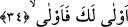

34. Lâyıktır (o azap) sana, lâyık!
Sana yaklaşsın ‘o azap’ çünkü sen lâyıksın.
35. Evet, lâyıktır sana (o azap) lâyık!
Sonra yine sana yaklaşsın ‘o azap’ zira sen lâyıksın. Sonraki âyet bir önceki âyeti
pekiştirmek, güçlendirmek için tekrarlanmıştır. “__WORD__ ifâdesi “yazık sana” yerinde
kullanılmıştır. Bu ifâde “yakınlık” anlamına gelen “el-velyü” kökünden türemiştir.
Kasdedilen -yukarda işâret olunduğu üzere- o kâfirin hoşlanmadığı şeyin başına gelmesi
için bedduâdır. Bu ifâdeyi açacak olursak burada şöyle denmiş oluyor: ”__WORD__/Hoşlanmadığın şeyi Allah başına getirsin” “leke” kelimesinin başındaki “lam” zaiddir.
Tıpkı: “Çabucak gelmesini istediğiniz şeyin (azâbın) bir kısmı herhalde yakında
başınıza gelecektir.” (en-Neml, 27/72) âyetindeki gibi.
Kâmûs’ta bu kelime şöyle açıklanır: “Evlâ leke” bir tehdiddir. Mânâsı; Allah ona
belâsını verecek şeyi yaklaştırsın demektir. Ya da bu ifâde “daha lâyık” anlamına bir
isimdir. Buna göre âyetin mânâsı: “Helâk senin için herşeyden daha lâyıktır” şeklinde
olur.
Kâşifî âyeti şöyle açıklamıştır: (Ey Ebû Cehil) Sana çetin bir ölüm lâyıktır, sonra
kabirde çetin bir azap lâyıktır, sonra kıyâmetin şiddeti lâyıktır ve sonra cehennemin
ebedî azâbı lâyıktır.
Bu âyet-i kerîme nâzil olduğunda Peygamber (s.a.) Efendimiz Bathâ’da Ebû Cehil’in
elbisesinin yakasını tuttu. Onu bir ya da iki kez silkeledi ve göğsüne bir yumruk vurarak:
“Sana yaklaşsın o azap çünkü sen lâyıksın. Sonra yine sana yaklaşsın o azap zira
sen lâyıksın” (el-Kıyâme, 75/34-35) âyetlerini okudu. Bunun üzerine Ebû Cehil
Peygamber Efendimiz’e (s.a.): “Beni tehdid mi ediyorsun ey Muhammed! Ne sen, ne de
Rabbin, bana hiç bir şey yapamazsınız. Çünkü ben bu vâdînin en şerefli adamıyım”[203]
dedi. Ancak daha sonraları Bedir günü Allah Teâlâ, Ebû Cehil’i en kötü bir biçimde
yere serdi ve onu en fenâ bir şekilde gebertti. Bedir savaşı günü Afrâ’nın iki oğlu onu
mızraklarıyla olduğu yere mıhlayıp geberttiler. İbn Mesud (r.a.) da çarçabuk cesedinin
yanına varıp işini bitirdi. Peygamber (s.a.) Efendimiz şöyle diyordu: “Her ümmetin bir
Fir’avn’ı vardır. Bu ümmetin Fir’avn’ı ise Ebû Cehil’dir.”